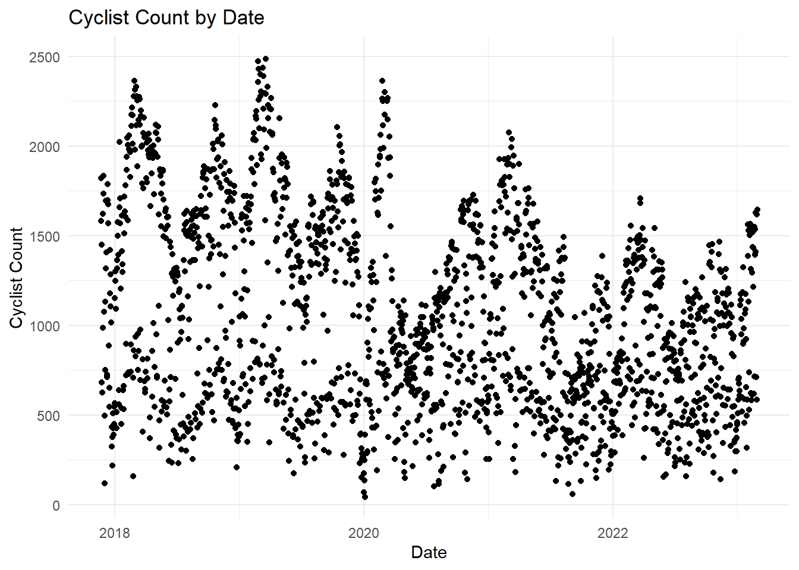
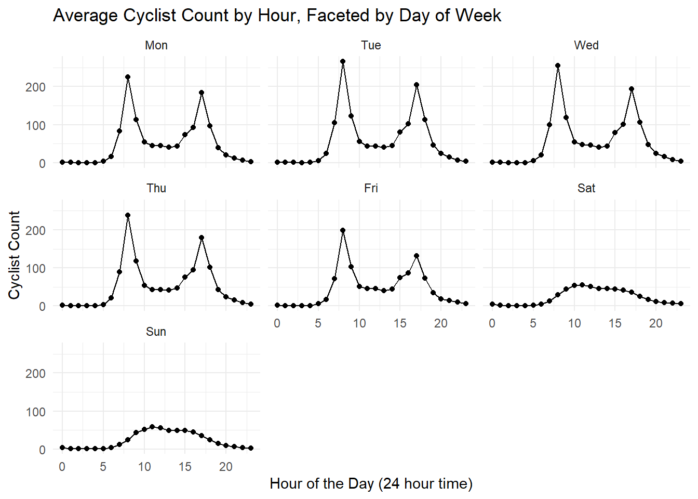

base_url <- "https://www.data.act.gov.au/resource/62sb-92ea.json"
limit <- 1000
get_data <- function(offset) {
url <- paste0(base_url, "?$offset=", offset, "&$limit=", limit)
request(url) |>
req_perform() |>
resp_body_json()
}Cycling in Canberra üö¥
Exploratory Data Analysis
Cycling
Canberra
Initial exploration into Canberra’s cycling habits
Context
Personal Interest
As an avid cyclist commuting to work to work as a data analyst, combining the two seems natural. This analysis is a personal exploration into the Canberra’s cycling habits, hopefully uncovering some patterns along the way.
Data Context
This dataset contains the number of trips counted by the bike barometer located on the Sullivan’s Creek shared path at the intersection with MacArthur Avenue in O’Connor. Colloquially known as Dickson Bike Path, it is commonly used by commuters into Civic, university students heading to Campus in Acton, school students, and avid cyclists.
The data is recorded in hourly intervals, and is collected using an induction loop similar to systems used for traffic light monitoring. Trips in both directions are included in the recorded counts.
Setup and Configuration
Let’s begin by loading the neccessary R libraries.
Data Loading (with API)
Accessing the Canberra Bike Barometer data requires interacting with an API. However, the API’s default limit of 1000 rows necessitates a more strategic approach.
To overcome this limitation, we can use a while loop that fetches data in chunks of 1000 rows. The tryCatch function handles potential API errors, ensuring a robust data retrieval process. So long the http response code is 2001, the loop will not break. If the response is empty length(result) == 0, it means there’s no more data and the loop will break.
1 When you see a 200 response, it signals that the data was retrieved without errors. The server has successfully processed our requests.
bike_data <- list()
offset <- 0
while (TRUE) {
print(paste("Offset:", offset))
result <- tryCatch({
get_data(offset)
}, error = function(e) {
print(paste("Error fetching data:", e$message))
return(NULL)
})
if (is.null(result) || length(result) == 0) {
break
}
bike_data <- c(bike_data, result)
offset <- offset + limit
# Mindful of rate limits to avoid being blocked by the API
Sys.sleep(1)
}[1] "Offset: 0"
[1] "Offset: 1000"
[1] "Offset: 2000"
[1] "Offset: 3000"
[1] "Offset: 4000"
[1] "Offset: 5000"
[1] "Offset: 6000"
[1] "Offset: 7000"
[1] "Offset: 8000"
[1] "Offset: 9000"
[1] "Offset: 10000"
[1] "Offset: 11000"
[1] "Offset: 12000"
[1] "Offset: 13000"
[1] "Offset: 14000"
[1] "Offset: 15000"
[1] "Offset: 16000"
[1] "Offset: 17000"
[1] "Offset: 18000"
[1] "Offset: 19000"
[1] "Offset: 20000"
[1] "Offset: 21000"
[1] "Offset: 22000"
[1] "Offset: 23000"
[1] "Offset: 24000"
[1] "Offset: 25000"
[1] "Offset: 26000"
[1] "Offset: 27000"
[1] "Offset: 28000"
[1] "Offset: 29000"
[1] "Offset: 30000"
[1] "Offset: 31000"
[1] "Offset: 32000"
[1] "Offset: 33000"
[1] "Offset: 34000"
[1] "Offset: 35000"
[1] "Offset: 36000"
[1] "Offset: 37000"
[1] "Offset: 38000"
[1] "Offset: 39000"
[1] "Offset: 40000"
[1] "Offset: 41000"
[1] "Offset: 42000"
[1] "Offset: 43000"
[1] "Offset: 44000"
[1] "Offset: 45000"
[1] "Offset: 46000"
[1] "Offset: 47000"raw_bike_data <- bike_data |>
map_dfr(as_tibble)Sanity Checks - Raw Data
Hurray! Let’s do some sanity checks to assess the data quality.
skim(raw_bike_data)| Name | raw_bike_data |
| Number of rows | 46200 |
| Number of columns | 4 |
| _______________________ | |
| Column type frequency: | |
| character | 4 |
| ________________________ | |
| Group variables | None |
Variable type: character
| skim_variable | n_missing | complete_rate | min | max | empty | n_unique | whitespace |
|---|---|---|---|---|---|---|---|
| date_time | 0 | 1 | 23 | 23 | 0 | 46200 | 0 |
| count | 0 | 1 | 1 | 3 | 0 | 463 | 0 |
| macarthur_ave_display_cyclist_in | 0 | 1 | 1 | 3 | 0 | 407 | 0 |
| macarthur_ave_display_cyclist_out | 0 | 1 | 1 | 3 | 0 | 319 | 0 |
Great! It’s promising to see 46200 unique datetime values. We’ll need to do some data cleaning and adjust count, macarthur_ave_display_cyclist_in, macarthur_ave_display_cyclist_out to be numeric values. Nevertheless, we can see that the min and max values are presumably between 0 and at most 999. The observed range seems plausible, and the absence of missing values is reassuring.
The great thing about the above data retrieval code is that hopefully it remains reproducible once ACT Government releases more recent data! This could be converted into an R package (a later project).
Data Cleaning
Let’s make those minor variable changes. We can now manipulate the data by converting the datetime column to a proper date-time format and ensure numeric columns are actually numeric types.
clean_bike_data <- raw_bike_data |>
mutate(
date_time = date_time |>
str_sub(1, 13) |>
as_datetime(format = "%Y-%m-%dT%H"),
across(
!date_time,
as.integer
)
) |>
# Avoid confusion with the count function
rename(cyclist_count = count)
clean_bike_data# A tibble: 46,200 × 4
date_time cyclist_count macarthur_ave_display_cyclist_in
<dttm> <int> <int>
1 2017-11-22 00:00:00 13 3
2 2017-11-22 01:00:00 2 2
3 2017-11-22 02:00:00 0 0
4 2017-11-22 03:00:00 0 0
5 2017-11-22 04:00:00 1 1
6 2017-11-22 05:00:00 9 5
7 2017-11-22 06:00:00 28 25
8 2017-11-22 07:00:00 157 149
9 2017-11-22 08:00:00 358 315
10 2017-11-22 09:00:00 144 131
# ℹ 46,190 more rows
# ℹ 1 more variable: macarthur_ave_display_cyclist_out <int>Sanity Checks - Clean Data
Now, that the data is cleaned we can do some more sanity checks. The average number of cyclists passing through the Macarthur Avenue crossing is 43.5533766. However, there is quite a right-skewed distribution (mostly low counts by the hour). Interestingly, there’s a slightly more cyclists heading into the city than out of the city. Our dataset ranges between 2017-11-22 and 2017-11-22.
skim(clean_bike_data)| Name | clean_bike_data |
| Number of rows | 46200 |
| Number of columns | 4 |
| _______________________ | |
| Column type frequency: | |
| numeric | 3 |
| POSIXct | 1 |
| ________________________ | |
| Group variables | None |
Variable type: numeric
| skim_variable | n_missing | complete_rate | mean | sd | p0 | p25 | p50 | p75 | p100 | hist |
|---|---|---|---|---|---|---|---|---|---|---|
| cyclist_count | 0 | 1 | 43.55 | 61.97 | 0 | 3 | 22 | 57 | 549 | ▇▁▁▁▁ |
| macarthur_ave_display_cyclist_in | 0 | 1 | 22.36 | 44.18 | 0 | 1 | 8 | 24 | 471 | ▇▁▁▁▁ |
| macarthur_ave_display_cyclist_out | 0 | 1 | 21.19 | 36.24 | 0 | 1 | 9 | 25 | 368 | ▇▁▁▁▁ |
Variable type: POSIXct
| skim_variable | n_missing | complete_rate | min | max | median | n_unique |
|---|---|---|---|---|---|---|
| date_time | 0 | 1 | 2017-11-22 | 2023-02-28 23:00:00 | 2020-07-11 11:30:00 | 46200 |
Initial visualisation explorations
Let’s visualise the hourly cyclist counts over time to identify any discernible trends.
clean_bike_data |>
ggplot(aes(
x = date_time,
y = cyclist_count
)) +
geom_point() +
theme_minimal()Wow, what an ugly plot! It seems like the hourly data has some significant fluctuations (likely nighttime lows). Let’s create a histogram to illustrate the right-skewed distribution of the cyclist_count variable and then aggregate to daily data and plot again.
clean_bike_data |>
ggplot(aes(
x = cyclist_count
)) +
geom_histogram(
bins = 60
) +
theme_minimal()The plot below shows the daily cyclist count. Again it’s still quite confusing with a wide range of values.
daily_cyclist_count <- clean_bike_data |>
mutate(
date = as_date(date_time)
) |>
group_by(date) |>
summarise(
across(
where(is.numeric),
sum
),
.groups = "drop"
) |>
ggplot(aes(
x = date,
y = cyclist_count
)) +
geom_point() +
labs(
title = "Cyclist Count by Date",
x = "Date",
y = "Cyclist Count",
) +
theme_minimal()
daily_cyclist_count
Canberrans cycle more during the week
Let’s take the same plot and add some colour indicating the day of the week. Now this paints a better picture, we’ve discovered that Canberrans are cycling less over the weekend. This also brings out the seasonality in the dataset (perhaps Summer and Spring). But we also can see the impacts of the COVID-19 lockdowns and potentially the aftermath of working from home policies.
daily_cyclist_count_coloured <- daily_cyclist_count +
aes(colour = wday(date, label = TRUE)) +
scale_colour_viridis_d() +
labs(colour = "Day of Week") +
theme(legend.position = "bottom")
daily_cyclist_count_colouredMorning and Afternoon Commutes
We’ve focused on the days of the week, let’s now visualise the time of day and also facet by day of the week.
cyclist_count_by_hour <- clean_bike_data |>
mutate(
hour = hour(date_time)
) |>
group_by(hour) |>
summarise(
across(
where(is.numeric),
mean
),
.groups = "drop"
) |>
ggplot(aes(
x = hour,
y = cyclist_count
)) +
geom_point() +
geom_line() +
labs(
title = "Average Cyclist Count by Hour",
x = "Hour of the Day (24 hour time)",
y = "Cyclist Count",
) +
theme_minimal()
cyclist_count_by_hourMorning and afternoon work commutes! It also seems there’s an increase around 3pm, maybe the finishing of school!
Let’s facet by day of the week to compare the hours by their respective days.
clean_bike_data_hourly_by_day_of_the_week <- clean_bike_data |>
mutate(
hour = hour(date_time),
day_of_week = date_time |>
date() |>
wday(week_start = 1, label = TRUE)
) |>
group_by(hour, day_of_week) |>
summarise(
across(
where(is.numeric),
mean
),
.groups = "drop"
)
cyclist_count_by_hour_with_facet <- clean_bike_data_hourly_by_day_of_the_week |>
ggplot(aes(
x = hour,
y = cyclist_count
)) +
geom_point() +
geom_line() +
labs(
title = "Average Cyclist Count by Hour, Faceted by Day of Week",
x = "Hour of the Day (24 hour time)",
y = "Cyclist Count"
) +
theme_minimal() +
facet_wrap(~day_of_week)
cyclist_count_by_hour_with_facet
Very interesting, as expected from the previous plots, weekends have less cyclists. We can see the morning work commutes during the week; however, there seems to be less commuters on Mondays and Fridays.
Next Steps
Moving forward, it would be interesting to expand the analysis and incorporate weather information and maybe major events like Spilt Milk or Groovin. I also want to look into the effect of Public Holidays and perhaps see if there’s any late night cyclists coming home from Thursday, Friday, Saturday nights out from Civic.
Another prospective idea would be looking into air quality data.
Could even look into doing some time series forecasting with the tidymodels or fable R packages.
Happy Cycling! üö¥